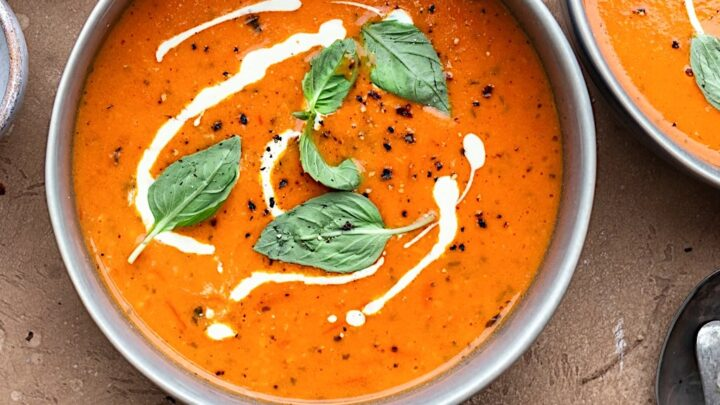

Roasted Tomato Soup

Description
This is a Roasted Tomato Soup that tastes terrific even if
your tomatoes aren’t at the height of ripe, seasonal
perfection. So imagine how spectacular it is when they are!
It’s incredibly simple to make: roast > blitz > warm > eat.
I love the hint of smoky flavour in this from smoked
paprika.
Ingredients
Smokey Roasted Tomatoes
- 1.5kg tomatoes
- 5 garlic cloves
- 2 tbsp olive oil
- 1 1/2 tsp smoked paprika
- 1 tsp cooking salt
- 1/4 tsp black pepper
Soup
- 1 tbsp olive oil
- 2 garlic cloves
- 1 onion
- 1 litre vegetable stock
- 1/2 tsp white sugar
- 1/2 cup cream
- 1/4 cup roughly chopped fresh basil leaves
Steps
Roast Tomatoes
- Preheat the oven to 220°C/425°F
(200°C fan-forced).
- Toss & squidge – Place the
tomatoes and unpeeled garlic cloves on a tray.
Drizzle/sprinkle with the oil, paprika, salt and
pepper. Toss to coat, squidging the cut face of the
tomato in the oil on the tray to thoroughly coat.
Arrange tomatoes cut face up.
- Roast for 40 to 45 minutes or until
there is some charring on the tomatoes (see photos).
Soup
- Sauté – Heat the oil in a large pot
over medium high heat. Sauté the garlic and onion
for 3 minutes or until the onion is translucent.
- Tomatoes – Remove the garlic cloves
from the baking tray. Scrape all the tomatoes and
juices into the pot. Squeeze garlic flesh into the
pot. Add vegetable stock.
- Blitz with a stick blender until
smooth (or do this in a food processor or blender).
- Simmer – Bring to a simmer then
lower heat to medium and simmer for 10 minutes.
Stir in the cream.
- Ladle into bowls, drizzle with
cream and garnish with basil. Dunk in grilled
cheese and enjoy!